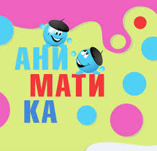

Рост +59% · Артек
Фестиваль
Фестиваль
«Аниматика»
Ассоциация анимационного кино · Минкультуры РФ
Ассоциация анимационного кино · Минкультуры РФ
«Аниматика» — VIII Международный фестиваль детского анимационного кино. Проходит в «Артеке» при поддержке Министерства культуры РФ. Дети приезжают со всей страны: смотрят премьеры, встречаются с режиссёрами и аниматорами, создают собственные мультфильмы в передвижных мастерских.

Руковожу пресс-службой Ассоциации анимационного кино. Для «Аниматики» стояла конкретная задача — обеспечить измеримый рост медиаприсутствия по сравнению с предыдущим годом.
С 206 до 328 публикаций — рост 59%. Это не случайный всплеск, а результат планомерной работы: чёткая структура инфоповодов, хорошие контакты с медиа и понимание того, что именно интересно журналистам в теме детской анимации.